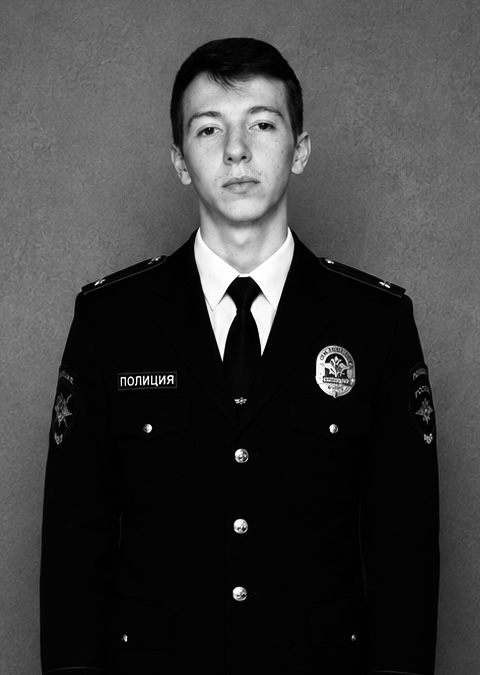

Я, уполномоченное лицо, гражданин:

Действуя на основании личных намерений, устойчивых чувств и окончательного решения о создании семьи, произвел задержание гражданки:
Действуя по предварительному взаимному согласию, вступили в сговор с целью создания семьи, совместного ведения хозяйства и пожизненного союза.
В ходе проверки выявлены следующие обстоятельства: